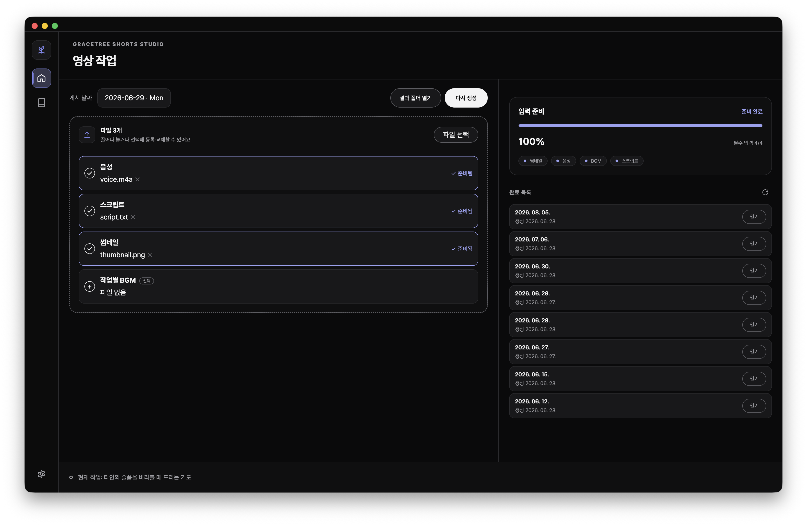

말씀기도 쇼츠를
한 번에 자동 제작
음성 녹음과 스크립트만 넣으면 — 자막·배경·BGM이 합성된 1080×1920 세로 영상이 나옵니다. 인터넷 없이, 기기 안에서.
A fully-offline desktop studio that turns a voice recording + script into a finished vertical short — local speech alignment, styled subtitle burn-in, and an atomic, recoverable render pipeline.

반복 제작을 끝내는 데 필요한 전부
영상 편집기가 아니라, "지금 생성 가능한가 · 결과가 어디 있는가"를 빠르게 끝내는 도구.
완전 오프라인
음성 인식(STT)까지 로컬 모델로 처리. 네트워크 호출이 없어 원고·음성이 기기를 떠나지 않습니다.
로컬 음성 정렬
Whisper 단어 단위 타임스탬프로 자막을 실제 발화 구간에 정확히 맞춥니다.
스타일드 자막 번인
libass로 한글 폰트를 번들 번인. 제목·말씀·기도 레이아웃과 페이드, "아멘" 홀드까지.
멀티프로세스 설계
Electron(TS) UI ↔ Python 엔진을 JSON Lines + 공유 스키마 계약으로 안전하게 연결.
프로덕션급 안전성
허용목록 서브프로세스, 경로 경계 검사, 원자적 커밋, 취소·실패 복구를 1차 안전선으로.
크로스플랫폼 배포
Windows·macOS 설치 패키지, 엔진 번들, 서명 게이트, 오프라인 설치 스모크 테스트.
생성 파이프라인
각 단계는 시작 전 취소 체크포인트를 두고, 검증을 통과한 산출물만 원자적으로 커밋합니다.
기술 스택
멀티프로세스 · 미디어 · 안전성 문제를 다루는 풀스택 데스크톱 프로젝트.
다운로드
Windows·macOS 설치 패키지. 최신 버전은 GitHub Releases에서 받습니다.
⏳ 정식 릴리스 준비 중입니다. 그동안 소스와 빌드 방법은 GitHub 저장소에서 확인하세요.